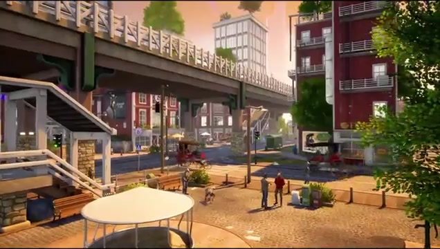

Goat Simulator 3: Multiverse of Nonsense
Joining Coffee Stain North late in production, I helped get gameplay features to a shippable state. My main job was finishing the vehicles, for both player control and NPC use, and I also implemented networked gameplay.
- Studio
- Coffee Stain North
- Year
- 2024
- My role
- Game design, scripting
- Tech
- Unreal Engine 4, Blueprints
Hitting the ground running
I joined the project late in production. My first job was to understand the tone of Goat Simulator and its deliberately contradictory design, to learn the method to the madness.
Once I had that, I could move quickly onto gameplay features and events and polish them to a shippable state. Most of that meant picking up and finishing work other designers had started.

What I worked on
- Finalised the vehicle implementation, both for player control and for NPCs driving them.
- Implemented networked gameplay.
- Iterated on existing gameplay designs.
- Fixed bugs across features in the run-up to release.